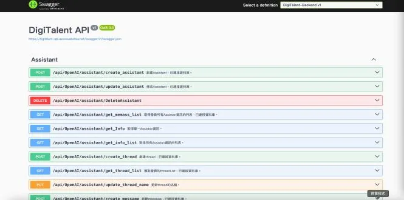
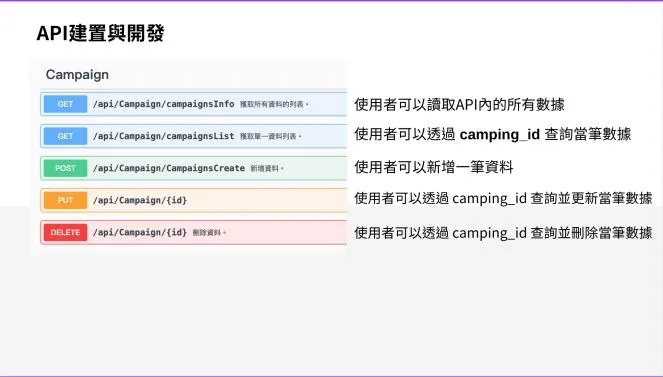
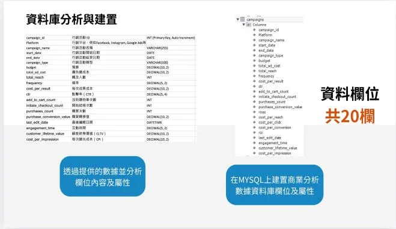

前端系統登入
使用者登入後，即可建立與管理自己的 BOT。
讓不同需求的使用者量身打造專屬 Assistants bot，並支援數據分析的協作平台。

01 專案概述
ASKY 是參與「2024 DIGI+ Talent 跨域數位人才加速躍升計畫」時完成的 AI 協作平台。使用者可以依自己的目標建立專屬的 Assistants bot，平台也提供商業數據分析功能。
02 我負責的部分
使用 ASP.NET 開發後端 API
串接 ChatGPT API，讓使用者建立自己的 Assistants bot
設計專案所需的資料庫，包含商業數據分析資料庫
擔任計畫期末成果展的上台發表成員
03 功能與畫面
使用者登入後，即可建立與管理自己的 BOT。
以 ASP.NET 開發的 API，負責串接 ChatGPT 與資料存取。



04 成果與收穫
期末成果展發表
代表團隊在計畫期末成果展上台發表 ASKY。
[成果或數據]
[例如上線後的使用情況、效能改善或使用者回饋]
[個人收穫]
[例如第一次串接 ChatGPT API 學到的事]